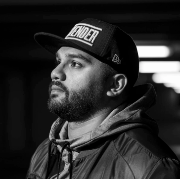

SEARCH FOR PLAYERS

| Opponent | Competition | Date | Min | Goals | xG | Shots | On Target | Touches Opp Box | Crosses | Cross% | Key Passes | Pass% | Aerial Won |
|---|
![MONEYBOL]()
MoneyBol is an experimental AI-assisted football analytics intelligence platform. Inspired by the principles behind “Moneyball”, using data and analytics to uncover undervalued talent and support smarter recruitment decisions.
Combining AI, open football data, and strategic design thinking, MoneyBol transforms complex scouting and player analysis into a modern, accessible experience for clubs, academies, agents, players, and football enthusiasts.
Rather than replacing traditional scouting, MoneyBol is designed to support human decision-making through data-informed insights, player profiling, and exploratory analysis.
The name blends “Money” from “Moneyball” with “Bol,” inspired by fútbol, representing the evolving future of football analytics intelligence powered by data, AI, and design.
MoneyBol is an independent experimental platform created by Contender Studio and JSNJAY Design Inc. and is not affiliated with or endorsed by any football club, league, federation, or data provider unless explicitly stated.
Every player on MoneyBol is assigned an Official EA FC Rating, the industry-standard overall score used by EA Sports to evaluate player quality globally. Ratings are sourced directly from the EA FC dataset and range from 1 to 99, with the world's best players rated in the high 80s and 90s.
EA ratings are determined by EA Sports through a combination of real-world performance data, expert scout reports, and statistical analysis across dozens of in-game attributes including:
Players are only shown on MoneyBol if they have an official EA FC rating, ensuring every profile reflects a globally recognised standard of player quality.

Jason Jay (JSNJAY) is a Toronto-based designer, artist, and creative consultant with over 15+ years of experience at the intersection of design, sport tech, and innovation.
CEO and Creative Director of Contender Studio, Jason helps athletic brands connect with people and build legacy through game-changing experiences.
Olivia Weiss is a design intern and emerging interaction designer currently pursuing her degree in Interaction Design at Sheridan College. Entering her fourth year, Olivia is passionate about combining sports and design to create engaging, meaningful experiences that connect with athletes and fans. With a background in athletics and a growing focus on sport design, she is driven by creativity, storytelling, and innovation within the sports industry.
TERMS OF USE
MoneyBol is an experimental AI-assisted football scouting and roster intelligence platform created for research, educational, and informational purposes. The platform uses publicly available and/or third-party football data sources to generate player insights, rankings, and analysis. MoneyBol does not guarantee the accuracy, completeness, or reliability of any data, projections, evaluations, or recommendations presented on the platform.
AI-generated insights and scouting outputs are intended to support human decision-making only and should not be relied upon as the sole basis for recruitment, contracting, valuation, or player development decisions.
Player statistics, metadata, and related information displayed on MoneyBol may originate from publicly available, open-source, or third-party datasets. All trademarks, league names, club names, and player likenesses remain the property of their respective owners.
MoneyBol is an independent platform and is not affiliated with, endorsed by, or officially connected to any football club, league, federation, player agency, or data provider unless explicitly stated.
By using this platform, users acknowledge that all information is provided "as is" without warranties of any kind. MoneyBol, Contender Studio, and JSNJAY DESIGN INC. shall not be liable for any losses, damages, or decisions arising from the use of the platform or its outputs.
All platform design, branding, visual systems, and proprietary workflows are the intellectual property of Contender Studio and JSNJAY DESIGN INC. Unauthorized reproduction or redistribution is prohibited.
You agree to indemnify, defend, and hold harmless Contender Studio, JSNJAY Design Inc., and its officers, directors, employees, and agents from and against any and all claims, liabilities, damages, losses, costs, expenses, or fees (including reasonable attorneys' fees) that arise from your use or misuse of the MoneyBol platform, your violation of these Terms of Use, or your violation of any rights of a third party.
MoneyBol is provided for human-driven analysis and exploration. You agree not to:
- Use any robot, spider, scraper, data mining tool, or other automated means to access, extract, or copy data, AI outputs, or visual assets from the platform.
- Reverse engineer, decompile, or disassemble any aspect of the MoneyBol platform or its underlying AI models.
- Use the platform to build a competitive product, train a separate AI model, or replicate our proprietary workflows.
- Attempt to bypass, disable, or interfere with any security-related features of the site.
When interacting with our AI Analyst or submitting queries ("User Inputs"), you agree not to submit sensitive, confidential, or proprietary third-party information. By submitting User Inputs, you grant Contender Studio the right to store and utilize these queries to monitor performance, troubleshoot issues, and improve our AI models and platform functionalities. Due to the nature of machine learning, outputs generated by MoneyBol may not be unique across users, and you do not claim exclusive ownership over the specific AI-generated responses provided by the platform.
Contender Studio reserves the right, at its sole discretion, to modify, suspend, or terminate the MoneyBol platform (or any part thereof) at any time, with or without notice. We also reserve the right to update these Terms of Use at any time. Continued use of the platform following any updates constitutes your acceptance of the revised terms.
These Terms of Use, and any disputes arising out of or related to your use of the MoneyBol platform, shall be governed by and construed in accordance with the laws of the Province of Ontario and the federal laws of Canada applicable therein, without regard to its conflict of law principles. You agree to submit to the exclusive jurisdiction of the courts located in Ontario, Canada, for the resolution of any legal matters or disputes.
Questions about these terms? Get in touch with us.
PRIVACY POLICY
MoneyBol is an experimental AI-assisted football scouting and roster intelligence platform created for research, educational, and informational purposes. The platform uses publicly available and/or third-party football data sources to generate player insights, rankings, and analysis.
AI-generated insights and scouting outputs are intended to support human decision-making only and should not be relied upon as the sole basis for recruitment, contracting, valuation, or player development decisions. MoneyBol does not guarantee the accuracy, completeness, or reliability of any data, projections, evaluations, or recommendations presented on the platform.
Player statistics, metadata, and related information displayed on MoneyBol may originate from publicly available, open-source, or third-party datasets. All trademarks, league names, club names, and player likenesses remain the property of their respective owners. MoneyBol makes no claim of ownership over any third-party data or content.
MoneyBol is an independent platform and is not affiliated with, endorsed by, or officially connected to any football club, league, federation, player agency, or data provider unless explicitly stated.
By using this platform, users acknowledge that all information is provided "as is" without warranties of any kind. MoneyBol, Contender Studio, and JSNJAY DESIGN INC. shall not be liable for any losses, damages, or decisions arising from the use of the platform or its outputs.
All platform design, branding, visual systems, and proprietary workflows are the intellectual property of Contender Studio and JSNJAY DESIGN INC. Unauthorized reproduction or redistribution is prohibited.
For privacy-related questions or concerns, please contact us.
CONTACT
For questions about the platform, data, or partnership opportunities.